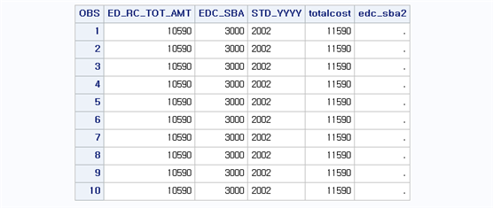
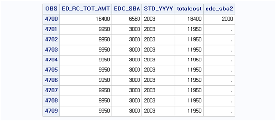
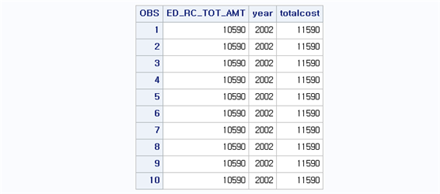
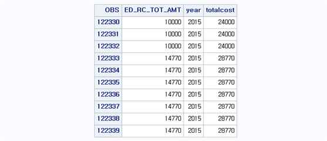
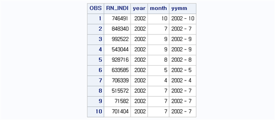
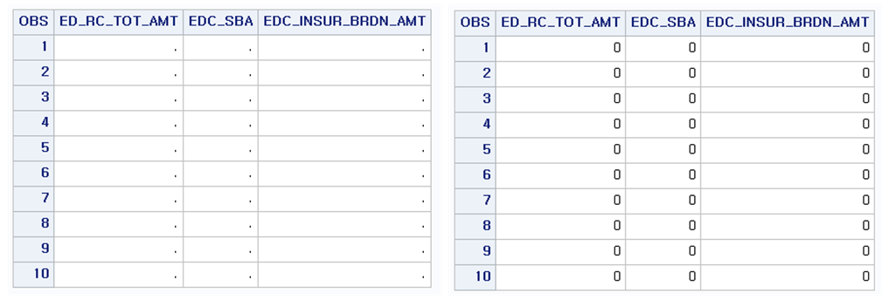

Chapter 7 반복문
동일한 작업에 대한 반복 처리를 위해서 SAS에서는 DO 문을 사용하며 DO 문은 END 문과 짝을 이루어 사용된다. 즉, DO 문은 END 문이 나올 때까지 DO와 END 사이에 있는 명령문들을 반복적으로 시행한다. DO 문에는 단순 DO 문, 반복을 표시하는 DO 문, DO WHILE 문 그리고 DO UNTIL 문 등이 있다. 또한 ARRAY 문과 결합하여 동일한 작업을 반복할 경우 반복 작업의 간소화가 가능하다.
7.1 단순 DO문
단순 DO 문은 조건문과 결합하여 사용되며, 특정 조건을 만족하는 경우 그 조건에서 여러 명령어를 시행해야 하는 경우 사용된다. 조건문과 같이 사용하기 때문에 형태는 IF ~ THEN DO; ~ END;와 같이 나타나며 사용방법은 다음과 같다.
IF 조건문1 THEN DO;
실행문1;
실행문2;
...
END;
ELSE DO;
실행문 ... ;
END;
또는 ELSE IF 조건문2 THEN DO; 실행문... END;BB.T20 데이터셋에서 기준연도(STD_YYYY)가 ‘2002’년일 때 심결요양급여비용총액(ED_RC_TOT_AMT)에 1000을 더해 totalcost 변수를 생성하고, 동일 조건에 만약 심결본인부담금(EDC_SBA)이 3000보다 크다면 0원으로 대체하여 EDC_SBA2 변수를 생성해보자. 또한 기준연도(STD_YYYY)가 ‘2003’년일 때 심결요양급여비용총액(ED_RC_TOT_AMT)에 2000을 더해 totalcost 변수를 생성하고, 동일 조건에 만약 심결본인부담금(EDC_SBA)이 3000보다 크다면 2000원으로 대체하여 EDC_SBA2 변수를 생성해보자. 즉, STD_YYYY가 ‘2002’ 일 때 두 가지 작업을 시행하고 마찬가지로 STD_YYYY가 ‘2003’ 일 때도 두 가지 작업을 시행한다. 이를 위한 프로그램은 다음과 같다.
data bb.t20_do;
set bb.t20;
if std_yyyy='2002' then do;
totalcost = ed_rc_tot_amt + 1000;
if edc_sba > 3000 then edc_sba2 = 0;
end;
else if std_yyyy='2003' then do;
totalcost = ed_rc_tot_amt + 2000;
if edc_sba > 3000 then edc_sba2 = 2000;
end;
keep ed_rc_tot_amt std_yyyy totalcost edc_sba edc_sba2;
run;
proc print data=bb.t20_do (obs=10);
where std_yyyy='2002';
run;
proc print data=bb.t20_do (obs=10);
where std_yyyy='2003';
run;

PRINT PROCEDURE에서 WHERE 문을 사용하면 조건문을 사용한 것과 같은 기능을 한다. 이는 PROC step 뿐만 아니라 DATA step에서도 사용 가능하다. 즉, DATA step에서 간단한 IF 문 대신에 WHERE 문으로 사용해도 무방하다.
7.2 반복 DO문
반복 DO 문은 DO 문안에 색인을 나타내는 색인(index) 변수를 지정하고, 색인 변수의 값을 증가시켜 색인 변수의 최종 값과 일치하면 반복을 중지한다. 증가 값은 기본적으로 1이지만 BY에 의해 증가 값을 지정할 수도 있다.
DO I=A TO B BY=C;
실행문;
END; 여기서 I는 색인을 나타내는 임의의 문자이며, 원하는 대로 바꾸어서 사용 가능하다. 다만, 색인 문자 뒤에 나타나는 A와 B는 각각 시작 숫자와 끝 숫자를 의미하며 C는 A부터 B까지 변할 때 증가되는 크기를 의미한다.. 예를 들어 [I=1 to 3 BY=1;]로 지정하면 I는 1, 2, 3의 값을 가지게 되며, I가 가지는 각각의 숫자마다 DO와 END 사이의 실행문을 반복해서 시행한다.
BB.T20 데이터셋에서 2002년부터 연도별로 심결요양급여비용총액(ED_RC_TOT_AMT)이 1000원씩 누적된다고 가정해보자. 즉, 2002년은 심결요양급여비용총액+1000, 2003년에는 심결요양급여비용총액+2000, 2004년에는 심결요양급여비용총액+3000 과 같이 2015년까지 매년 1000씩 누적시켜 TOTALCOST 변수를 생성시켜보자. 이를 위한 프로그램은 다음과 같다.
data bb.t20_do2;
set bb.t20;
year = std_yyyy*1;
do i=2002 to 2015;
if year = i then totalcost = ed_rc_tot_amt + (i-2001)*1000;
end;
keep year ed_rc_tot_amt totalcost;
run;
proc print data=bb.t20_do2 (obs=10); where year=2002; run;
proc print data=bb.t20_do2 (obs=10); where year=2015; run;

여기서 i는 2002부터 2015까지 1단위로 증가하면서 값이 바뀌며(BY=1 생략가능), 2002부터 2015까지의 크기인 14만큼 반복 수행하게 된다. 이때 조건이 YEAR=i이면, 즉, YEAR이 2002, 2003, …, 2015이면, 각 해당 연도에 TOTALCOST는 심결요양급여비용총액에 (I-2001)*1000 만큼 증가한 값이 저장된다. 즉, I=2002이면 1000, 2003이면 2000, …, 2015이면 14000 만큼 증가한다.
7.3 다중 반복 DO문
단순 DO 문에서 IF 문을 중첩해서 사용하듯 반복 DO 문도 중첩해서 사용 가능하며 사용 방법은 다음과 같다.
DO I=A TO B;
DO J=C TO D;
실행문;
END; END; 여기서 A와 B는 첫 번째 반복의 시작과 끝을 나타내는 수이며, C와 D는 두 번째 반복의 시작과 끝을 나타내는 수이다. 이때 반복 순서는 첫 번째 반복인 I가 A일때 J가 C부터 D까지 반복이 일어나며, 이러한 반복은 I의 값이 B에 이를 때까지 계속된다. 또한 DO 문은 END 문과 짝을 지어 이루어지기 때문에 두 개 이상의 DO 문을 사용하면 DO 문의 개수만큼 END 문을 사용해야 한다.
data bb.t20_doubledo;
set bb.t20;
year = substr(mdcare_strt_dt,1,4)*1;
month = substr(mdcare_strt_dt,5,2)*1;
do i = 2002 to 2015;
do j = 1 to 12 ;
if year = i and month = j then yymm = trim(i) || ' - ' || trim(j);
end;
end;
run;
proc print data=bb.t20_doubledo (obs=10);
var rn_indi year month yymm;
run;
I는 2002부터 2015까지 1단위로 증가하면서 값이 바뀌며, 2002부터 2015까지의 크기인 14만큼 반복 수행하게 된다. J는 1부터 12까지 1단위로 증가하면서 값이 바뀌며, 12만큼 반복수행 하게 된다. 이때 반복수행 순서는 I의 값이 바뀔 때마다 J는 전체 반복을 한다. 즉, I=2002일 때 J는 1부터 12까지 반복하며 다시 I=2003일 때 J는 1부터 12까지 반복한다. 다시 말해서 반복 순서는 바깥쪽에서부터 색인의 값이 하나씩 결정되며 제일 안쪽에 있는 DO 문은 전체를 반복한다. 안쪽의 DO 문이 끝나면 바깥쪽으로 순서대로 DO 문을 끝낸다. 프로그램에서 TRIM 함수는 값 뒤의 공백을 없애주는 함수이며, 기호 ‘||’는 문자열을 결합할 때 사용하는 기호이다. 따라서 [IF YEAR=I AND MONTH=J THEN YYMM=TRIM(I)||’ - ‘||TRIM(J);]는 YEAR=I이고 MONTH=J일 때 YYMM 변수는 ’I – J’ 값을 가지게 된다. 예를 들어, I=2002, MONTH=12이면, YYMM 변수는 ‘2002 – 12’ 라는 값을 가지게 되며 이러한 과정을 2002부터 2015까지, 1월부터 12월까지 모든 조합으로 조건을 검색하여 YYMM 변수를 생성한다.
7.4 ARRAY문의 활용
2개 이상의 변수에 대해 동일한 처리를 할 경우 DO문과 ARRAY문을 사용하여 간편하게 사용 가능하며 사용 방법은 다음과 같다.
ARRAY 이름{변수개수} 변수1 변수2...;
DO I = 1 TO 변수개수;
실행문;
END;여기서 이름은 임의의 ARRAY 명을 의미하며, ARRAY 명 다음에는 ARRAY에 나열될 변수의 개수를 중괄호({ }) 안에 기입한다. 그 후 각각의 변수명을 나열한다.
예를 들어, BB.T20 데이터셋에서 심결요양급여비용총액(ED_RC_TOT_AMT), 심결본인부담금(EDC_SBA), 심결보험자부담금(EDC_INSUR_BRDN_AMT)에 결측값이 존재한다고 가정하자. 이때 각 변수의 결측값을 0으로 대체하고자 한다. 이를 위해 조건문을 이용해 각각의 변수가 결측일 때 0의 값으로 대체할 수도 있으나, 동일한 실행과정에 변수명만 바뀌는 경우이기 때문에 DO-ARRAY 문을 이용하면 쉽게 해결된다. 특히 동일한 작업을 많은 변수에 시행해야 하는 경우에 매우 유용하다. 이를 위한 프로그램은 다음과 같다.
data bb.t20_array;
set bb.t20;
if ed_rc_tot_amt=0 then ed_rc_tot_amt=.;
if edc_sba=0 then edc_sba=.;
if edc_insur_brdn_amt=0 then edc_insur_brdn_amt=.;
keep ed_rc_tot_amt edc_sba edc_insur_brdn_amt;
run;
proc sort data=bb.t20_array; by ed_rc_tot_amt; run;
proc print data=bb.t20_array (obs=10); run;
data bb.t20_array1;
set bb.t20_array;
array alist{3} ed_rc_tot_amt edc_sba edc_insur_brdn_amt;
do j=1 to 3;
if alist{j}=. then alist{j}=0 ;
end;
drop j;
run;
proc print data=bb.t20_array1 (obs=10); run;여기서 ALIST는 임의의 이름이며 사용자 편의대로 지정 가능하다. 다만, ARRAY 문에서 ALIST는 지정되는 변수의 개수(여기서는 ED_RC_TOT_AMT, EDC_SBA, EDC_INSUR_BRDN_AMT 3개)가 ALIST 다음 중괄호 안에 정확히 지정되어야 한다. 또한, 지정된 ARRAY를 반복 구문에서 사용할 때는 ALIST{지정번호}를 이용한다. 예를 들어, ALIST{1}은 ARRAY의 첫 번째 변수 ED_RC_TOT_AMT를 의미하고, ALIST{2}는 두 번째 변수 EDC_SBA를 의미한다. 따라서 ARRAY 문의 ALIST{변수개수}와 반복 구문의 ALIST{지정번호}는 형태는 같으나 의미가 다르므로 구분해서 사용해야 한다.
